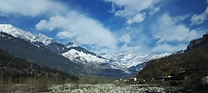

My Interests are
- Playing Games
- Travelling
- Watching movies
My favorite game
Chess is my favorite game Because the pattern of thinking in a game of chess can be used while dealing with real-life situations to achieve better outcomes. As a chess player, you learn to analyze situations, evaluate options, plan strategically and solve problems.
My Favorite place
Manali is my favorite place Besides natural charm and unparalleled beauty, Manali is known for its unlimited adventure opportunities, the famous Hadimba Temple, the scenic Rohtang Pass, the snow-laden Solang Valley and its delightful culinary scene.
My favorite Movie
Game of Thrones is pretty much a must-watch for anyone who calls themselves a fan of television. Yes, it's a fantasy show; you have your dragons, kings, queens, knights, and all that. But when you get into the meat of the series, you'll find it's actually a drama story in disguise